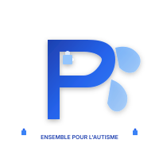
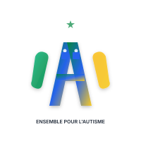
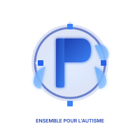
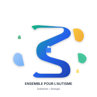
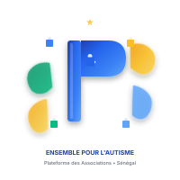

Cinq designs contemporains inspirés des tendances graphiques modernes

Design minimaliste avec lettre "P" (Pour l'Autisme) stylisée et éléments de swoosh fluides. Couleurs bleu autisme pur avec accents lumineux.

Lettre "A" (Autisme) entrelacée avec rubans tricolores sénégalais. Fusion harmonieuse des couleurs nationales et symboles de l'autisme.

Design circulaire symbolisant l'unité et l'inclusion. Lettre "P" au centre entourée de cercles et swoosh avec pièces de puzzle en constellation.

Lettre "S" en forme de ruban symbolisant la solidarité. Mix élégant des couleurs bleu, vert et jaune avec swoosh fluides.

Design haut de gamme avec lettre "P" et constellation de swoosh dorés, verts et bleus. Étoile sénégalaise dorée et pièces de puzzle colorées.
| Critères | Moderne 1 | Moderne 2 | Moderne 3 | Moderne 4 | Moderne 5 |
|---|---|---|---|---|---|
| Style | Minimaliste | Culturel | Circulaire | Ruban | Premium |
| Couleurs | Bleu pur | Tricolore | Bleu pur | Mix culturel | Multi-accents |
| Complexité | Simple | Moyenne | Moyenne | Moyenne | Riche |
| Identité Sénégal | Faible | Très forte | Faible | Forte | Forte |
| Symbole Autisme | Puzzle intégré | Puzzles doubles | 4 puzzles | Puzzle central | 5 puzzles |
| Adaptabilité | Excellente | Bonne | Bonne | Bonne | Moyenne |
| Message | Dynamisme | Unité culturelle | Inclusion | Solidarité | Excellence |
Chaque logo est disponible en 4 résolutions pour tous vos besoins
Pour vignettes et aperçus
~6-11 KB
Pour sites web et réseaux sociaux
~14-26 KB
Pour documents et présentations
~34-61 KB
Pour impression haute qualité
~83-140 KB
Logo Moderne 1 & 3: Idéaux pour communication internationale (bleu autisme universel)
Logo Moderne 2: Parfait pour identité nationale forte et événements locaux
Logo Moderne 4: Excellent pour campagnes de solidarité et partenariats
Logo Moderne 5: Premium pour documents officiels et supports institutionnels